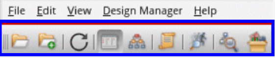

Library Manager Toolbar
Selecting View – Toolbar displays a Library Manager Toolbar below the menu bar that provides quick access to a number of useful commands that are also found in the Library Manager menus.

The Library Manager Toolbar contains the following short-cut tools:
|
Fields
|
Description
|
|
Open For Edit
|
Opens a selected View in the appropriate application for edit.
|
|
Open With
|
Displays the Open File form where you can select what particular application that you want to open a selected view with.
|
|
Refresh
|
Refreshes the Library Manager, design data, and the CDF data.
|
|
View Lists
|
Displays library, cell and view content in a list format.
|
|
View Tree
|
Displays library, cell, and view content in a hierarchical tree format.
|
|
Show Categories
|
Toggles on and off the display of the Categories column list or tree information.
|
|
Reanalyze States
|
Retrieves and displays the latest file states when selecting a new cell in the List view, or an Open/Close of a cell in the tree view. This command works similarly to the View – Refresh menu option but has lower overhead as it does not regenerate the library file contents.
File states are not tracked if this option is selected.
|
|
Show open cellviews in use
|
Reloads the lists in the window with icons next to names to indicate if a library, cell, or view is opened in read mode or edit mode.
|
|
Show non-Virtuoso view types
|
Displays the non-Virtuoso view types for the selected cell.
|
Thumbnail Images of Cellviews
Cellview previews are provided in the lower right area of the Library Manager window, in both the tree and list views.
These thumbnail images are an approximate representation of a cellview, with some details that cannot be appropriately displayed removed. Thumbnail cellview previews can however aid selection before opening a view.
You can update displayed thumbnail images by selecting Edit – Update Thumbnails or right-clicking in the Library Manager and selecting Update Thumbnails from the context-menu presented.
Thumbnail images that represent Pcells can be identified with a Pcell watermark in the lower left corner of the image.
For more information, see hiGenerateThumbnails in the Cadence User Interface SKILL Reference.
Related Topics
enable
display
generate
verbose
Viewing the cds.lib Updates
Return to top